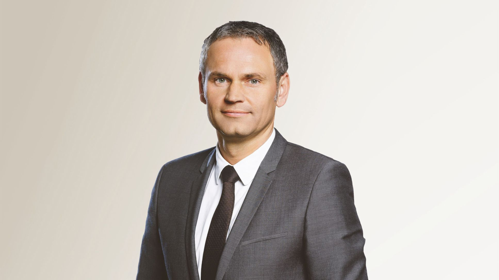

TEAMS IN THE INDUSTRY
FERRARI
Benedetto Vigna
Benedetto Vigna is Chief Executive Officer since September 2021. Before joining Ferrari, he was President of STMicroelectronics’, Analog, MEMS and Sensors Group, since January 2016 and also a member of ST’s Executive Committee from May 31, 2018. Vigna joined ST in 1995 and founded the Company’s MEMS activities (Micro-Electro-Mechanical Systems). Under his guidance, ST’s MEMS sensors established the Company’s leadership with large OEMs in motion-activated user interfaces. His responsibilities were expanded to include connectivity, imaging and power solutions and he piloted a series of successful moves into new business areas, with a particular focus on the industrial and automotive market segments. During his career Vigna has filed more than 200 patents on micromachining, authored numerous publications and has sat on the Boards of several EU-funded programs including start ups as well as worldwide recognized Boards of Asian and American research centers. Benedetto Vigna graduated in Subnuclear Physics from the University of Pisa
BUGGATI
Mate Rimac

Mate Rimac born 12 February 1988 is a Croatian innovator and entrepreneur. He is the founder and CEO of the Rimac Group, a business which includes Bugatti Rimac – composed of the Bugatti Automobiles and Rimac Automobili brands – as well as Rimac Technology, a supplier of technology to automotive brands. He also founded Greyp Bikes, a high-tech eBike and eBike technology company which was taken over by Porsche AG and is now known as Porsche eBike Performance GmbH.
PORSCHE
Oliver Blume

Blume was born in Braunschweig. After graduating from high school in Braunschweig, Blume studied mechanical engineering at the Braunschweig University of Technology.
In 1994, Blume graduated from an international trainee program at Audi.
At age 28, he was a planner for body shop and paint at Audi. Three years later, he took over the responsibility for the body of the Audi A3, and two more years after that, he was appointed Executive Assistant production at Audi.[citation needed] He received his PhD on vehicle technology. For five years, Blume was in the production planning of SEAT, another five years at the Volkswagen brand.
In 2013, he was appointed to the Porsche Executive Board, where he was responsible for production and logistics.
Since 1 October 2015 Blume has served as CEO of Volkswagen subsidiary Porsche; the supervisory board of the company appointed him to this position on 30 September 2015. He replaced Matthias Müller, who became CEO of VW Group.
AUDI
Gernot Döllner

Gernot Döllner, born in 1969, studied mechanical engineering and design engineering/vehicle technology in Braunschweig, Germany, and Waterloo, Canada. In 1993, he joined Volkswagen AG as a doctoral student in Wolfsburg. Following his doctorate, he worked as a systems analyst. In 1998, Gernot Döllner moved to Porsche AG in Weissach, as project manager for reengineering. From 2001 to 2010, he was Head of the Vehicle Concepts and Package department there. Additionally, he took over project management for the Porsche 918 Spyder in 2009/2010. Gernot Döllner then became the main department head of Product Strategy at Porsche AG. From 2011 to 2018 he was Head of the Panamera model series. After that, he was head of Product and Concept of Porsche AG. In 2021, he returned to Wolfsburg, where he led the Group Strategy, the Group Product Strategy, and the General Secretariat of Volkswagen AG. The Supervisory Board of AUDI AG appointed Gernot Döllner as Chairman of the Board of Management of AUDI AG, effective September 1, 2023. Since then, he has also been a member of the Board of Management of the Volkswagen Group. He heads the Brand Group Progressive which includes Audi, Bentley, Lamborghini, and Ducati. He was additionally entrusted with Board of Management responsibility for Technical Development at AUDI AG effective March 9, 2024.
TOYOTA
Akio Toyoda
Akio Toyoda is a Japanese business executive who is the chairman of Toyota Motor Corporation. He was previously the company's president and chief executive officer (CEO). Toyoda is a great-grandson of the industrialist, Sakichi Toyoda, and a grandson of both the founder of Toyota Motors, Kiichiro Toyoda, and the founder of the Takashimaya department stores corporation, Shinshichi Iida. On 1 April 2023, Toyoda stepped down as Toyota president and became chairman of the board. Toyota's chief branding officer and president of the Lexus division, Koji Sato, succeeded Toyoda as CEO.